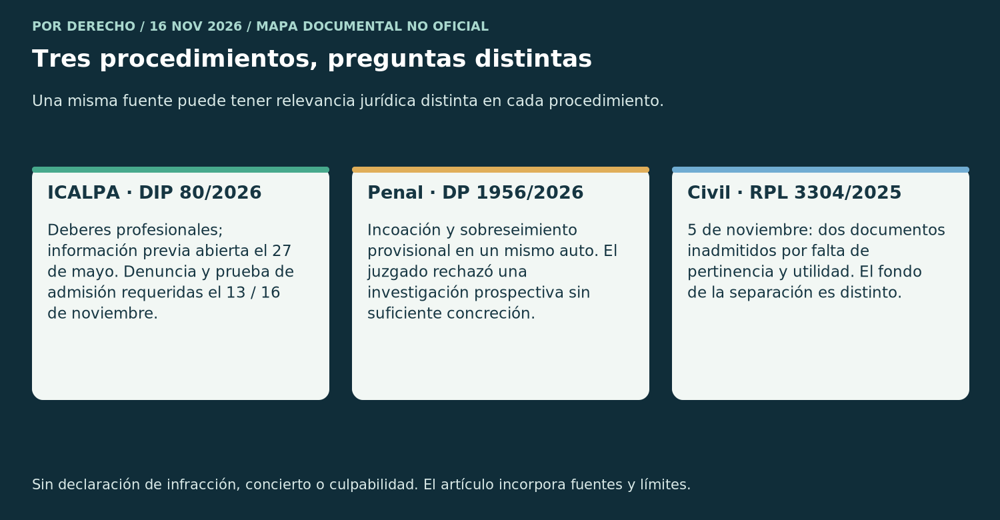
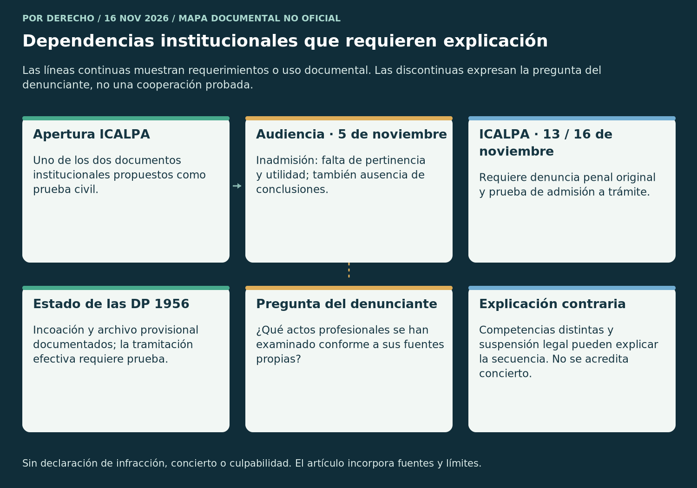
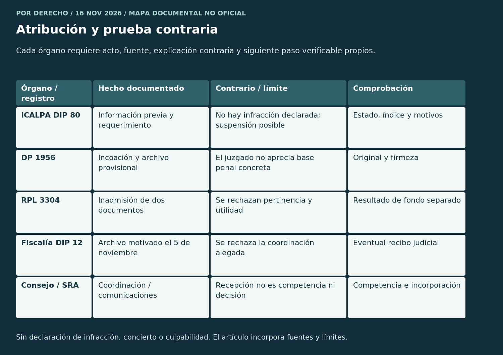
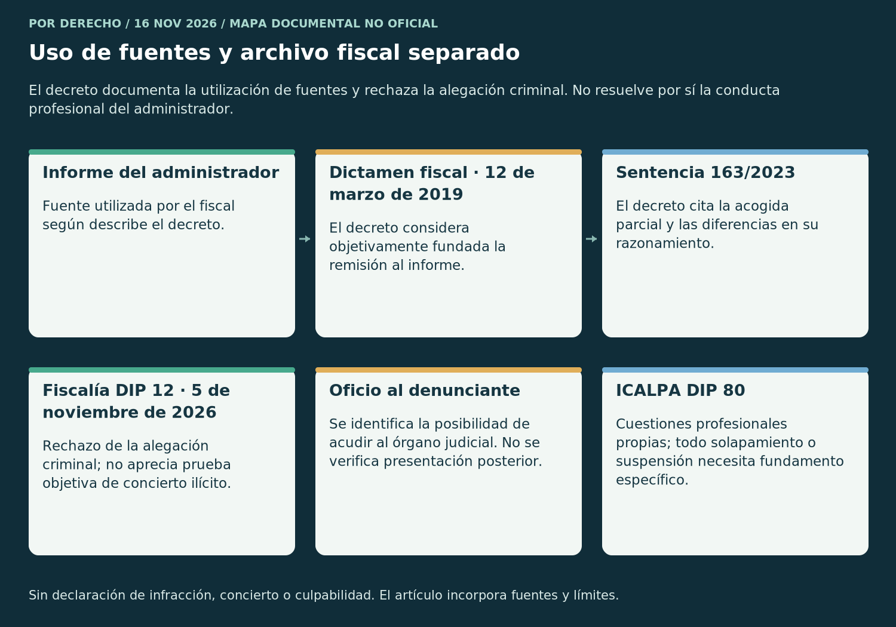

Un mismo registro. Deberes distintos. Decisiones motivadas.
Las DIP 80/2026 del ICALPA se refieren a la actuación profesional del administrador concursal. Esta actualización documental distingue esa información previa de las vías penal y civil, conserva las decisiones adversas e identifica las cuestiones que siguen pendientes de respuesta.
Corte documental: 16 de noviembre de 2026 · Relato de la parte denunciante · No se acredita una declaración de infracción
Qué cambió el 16 de noviembre
El escrito del ICALPA de 13 de noviembre, con registro de salida RS-005744 de 16 de noviembre, requiere en diez días la denuncia penal original y documentación que acredite su admisión a trámite. Pretende comprobar si se tramita un proceso penal por los mismos hechos u otros estrechamente vinculados. Es un requerimiento documental, no una declaración de infracción ni un acuerdo de suspensión de las DIP 80.
La fecha exacta de notificación y el vencimiento resultante requieren comprobación. Esta página pública no calcula ni certifica el plazo de respuesta, y su publicación no entrega la documentación requerida.
Cronología y estado procesal
Se abrieron las DIP 80/2026 de información previa. El registro histórico identifica el nombramiento de ponente. La apertura no acredita una infracción. Fuente
Las DP 1956/2026 se incoaron y sobreseyeron provisionalmente en el mismo auto. El juzgado no apreció hechos delictivos suficientemente concretos ni base objetiva para una investigación prospectiva. En el registro examinado no se acredita un recurso posterior, reapertura o firmeza actual. Fuente
La coordinación ante el Consejo Canario se registró como RE-000329 el 22 de septiembre; el 30 de septiembre siguió un escrito consolidado de 59 páginas. No constituye un recurso formal contra una decisión de las DIP 80. Fuente
El registro de transmisión preservado identifica nueva documentación para ICALPA y comunicaciones separadas al Consejo Canario y a la SRA. El envío no acredita incorporación, competencia, investigación ni pronunciamiento. Fuente
En el RPL 3304/2025, con el RPL 3319/2025 acumulado, la Audiencia Provincial inadmitió dos documentos institucionales por falta de pertinencia y utilidad, señalando también la ausencia de conclusiones institucionales. El auto no resuelve el fondo de la separación del administrador. Fuente
Se incoaron y archivaron las DIP 12/2026 de Fiscalía relativas a un fiscal. El decreto rechaza la coordinación criminal alegada y no aprecia indicios objetivos que la sustenten. Es una vía distinta de las DP 1956 relativas al administrador. Fuente
El requerimiento del ICALPA está fechado el 13 de noviembre y lleva registro de salida RS-005744 de 16 de noviembre. Deben distinguirse admisión, tramitación penal efectiva y resolución judicial firme. Fuente
La motivación contraria forma parte del registro
El decreto fiscal de 5 de noviembre explica la remisión del fiscal al informe del administrador y la acogida parcial de ese criterio por la Sentencia 163/2023 como compatibles con el ejercicio legítimo de las funciones institucionales. Rechaza la arbitrariedad intencional, el concierto ilícito y la participación criminal por falta de datos objetivos. También se apoya en diferencias entre lo solicitado y lo resuelto. Estos fundamentos adversos deben examinarse junto a la posición del denunciante.
Fuente · DIP 12/2026El denunciante mantiene una alegación no probada de coordinación criminal entre administrador, fiscal y órgano judicial, mediante premisas concursales discutidas, inversión de responsabilidad y consecuencias patrimoniales. La secuencia de utilización de fuentes es objeto de examen; la coincidencia sustantiva no acredita concierto, corrupción ni culpabilidad. El acto, deber, conocimiento, intención, contribución causal y explicación lícita de cada persona requieren prueba propia.
El oficio adjunto identifica la posibilidad de reiterar la pretensión ante el órgano judicial competente conforme al artículo 773 de la Ley de Enjuiciamiento Criminal. Aquí no se acredita una presentación judicial posterior. Este relato no decide la firmeza ni la admisibilidad de una futura solicitud.
Mapa documental 01 / 04
Tres procedimientos, preguntas distintas
Una misma fuente puede tener relevancia jurídica distinta en cada procedimiento.


Leer el contenido completo del diagrama
ICALPA · DIP 80/2026
Deberes profesionales; información previa abierta el 27 de mayo. Denuncia y prueba de admisión requeridas el 13 / 16 de noviembre.
Penal · DP 1956/2026
Incoación y sobreseimiento provisional en un mismo auto. El juzgado rechazó una investigación prospectiva sin suficiente concreción.
Civil · RPL 3304/2025
5 de noviembre: dos documentos inadmitidos por falta de pertinencia y utilidad. El fondo de la separación es distinto.
Mapa documental 02 / 04
Dependencias institucionales que requieren explicación
Las líneas continuas muestran requerimientos o uso documental. Las discontinuas expresan la pregunta del denunciante, no una cooperación probada.


Leer el contenido completo del diagrama
Apertura ICALPA
Uno de los dos documentos institucionales propuestos como prueba civil.
Audiencia · 5 de noviembre
Inadmisión: falta de pertinencia y utilidad; también ausencia de conclusiones.
ICALPA · 13 / 16 de noviembre
Requiere denuncia penal original y prueba de admisión a trámite.
Estado de las DP 1956
Incoación y archivo provisional documentados; la tramitación efectiva requiere prueba.
Pregunta del denunciante
¿Qué actos profesionales se han examinado conforme a sus fuentes propias?
Explicación contraria
Competencias distintas y suspensión legal pueden explicar la secuencia. No se acredita concierto.
Mapa documental 03 / 04
Atribución y prueba contraria
Cada órgano requiere acto, fuente, explicación contraria y siguiente paso verificable propios.


Leer el contenido completo del diagrama
| Órgano / registro | Hecho documentado | Contrario / límite | Comprobación |
|---|---|---|---|
| ICALPA DIP 80 | Información previa y requerimiento | No hay infracción declarada; suspensión posible | Estado, índice y motivos |
| DP 1956 | Incoación y archivo provisional | El juzgado no aprecia base penal concreta | Original y firmeza |
| RPL 3304 | Inadmisión de dos documentos | Se rechazan pertinencia y utilidad | Resultado de fondo separado |
| Fiscalía DIP 12 | Archivo motivado el 5 de noviembre | Se rechaza la coordinación alegada | Eventual recibo judicial |
| Consejo / SRA | Coordinación / comunicaciones | Recepción no es competencia ni decisión | Competencia e incorporación |
Mapa documental 04 / 04
Uso de fuentes y archivo fiscal separado
El decreto documenta la utilización de fuentes y rechaza la alegación criminal. No resuelve por sí la conducta profesional del administrador.


Leer el contenido completo del diagrama
Informe del administrador
Fuente utilizada por el fiscal según describe el decreto.
Dictamen fiscal · 12 de marzo de 2019
El decreto considera objetivamente fundada la remisión al informe.
Sentencia 163/2023
El decreto cita la acogida parcial y las diferencias en su razonamiento.
Fiscalía DIP 12 · 5 de noviembre de 2026
Rechazo de la alegación criminal; no aprecia prueba objetiva de concierto ilícito.
Oficio al denunciante
Se identifica la posibilidad de acudir al órgano judicial. No se verifica presentación posterior.
ICALPA DIP 80
Cuestiones profesionales propias; todo solapamiento o suspensión necesita fundamento específico.
Competencia profesional y reglas efectivas de suspensión
El artículo 6.1 del reglamento disciplinario de 2024 prevé la iniciación y suspensión cuando se tramita un proceso penal por los mismos hechos u otros estrechamente vinculados. El artículo 6.5 también permite suspender ante un proceso judicial no penal cuando la separación de los hechos resulta racionalmente imposible. El artículo 16 regula la información previa, su resolución y el período de tres meses salvo circunstancias excepcionales. Corresponde identificar la norma aplicable, el estado procesal efectivo y los hechos solapados; esta página no prejuzga esa determinación. Deben considerarse asimismo el ámbito del reglamento y las normas autonómicas o corporativas aplicables.
Circular oficial del ICALPA sobre el reglamento de 2024 · Reglamento: artículos 2, 6 y 16
Cinco preguntas que requieren respuesta motivada
- Certificar el estado actual de las DIP 80, el ponente, los escritos incorporados y el índice documental.
- Distinguir la incoación, el sobreseimiento provisional simultáneo, un eventual recurso y la firmeza acreditada de las DP 1956.
- Identificar los actos profesionales y las fuentes examinados, junto a las explicaciones del denunciado y sus derechos de defensa.
- Motivar una eventual suspensión con los procedimientos efectivos, los hechos solapados y la norma aplicable; explicar cualquier prolongación excepcional.
- Adoptar la decisión procesal motivada que proceda conforme a la prueba y al Derecho, indicando las vías de revisión aplicables. No se exige una sanción predeterminada.
Fuentes y límites
- ICALPA RS-005744, escrito de 13 de noviembre y registro de salida de 16 de noviembre de 2026. Registro histórico de apertura y mesa para el 27 de mayo.Requerimiento documental; no resolución disciplinaria.
- Auto DP 1956/2026, tres fotografías de páginas preservadas; la fecha de julio procede del registro de custodia.Incoación y sobreseimiento provisional simultáneos; firmeza actual no verificada.
- Audiencia Provincial, Sección Cuarta, RPL 3304/2025, auto de 5 de noviembre de 2026; copia de cuatro páginas.Inadmisión de dos documentos; este auto no decide el fondo de la separación.
- Fiscalía DIP 12/2026, decreto y oficio firmados el 5 de noviembre de 2026.Rechazo de la alegación penal contra un fiscal; se identifica el cauce judicial.
- Registro del Consejo Canario RE-000329 y escrito consolidado de 30 de septiembre.Coordinación; no recurso ni pronunciamiento de fondo.
- Escritos preservados de 9 de octubre para ICALPA, Consejo y tres comunicaciones SRA distintas, con estado de transmisión documentado en custodia privada.No se reproducen correos íntegros, destinatarios ni identificadores del proveedor; no se presume aceptación de fondo.
Solo se publican resúmenes documentales minimizados y nuevos diagramas explicativos. Los originales, firmas, códigos de validación, domicilios privados, asesoramiento reservado y documentos judiciales sin expurgar quedan fuera de esta publicación. Los diagramas ilustran; no son prueba independiente.
Derecho de respuesta y corrección: este relato independiente pertenece a la parte denunciante; no es una publicación del ICALPA, de un juzgado o de Fiscalía. Toda corrección debería identificar la proposición discutida y su fuente. Puede utilizarse el cauce de contacto existente en la mesa DIP 80. El silencio no permite extraer una inferencia adversa.